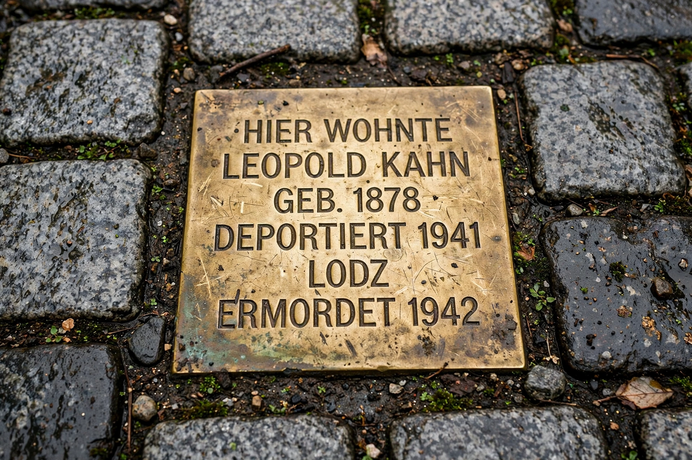

Antisemitism
| Antisemitism | |
|---|---|
 | |
| Definition | Hostility to, prejudice towards, or discrimination against Jews |
| Term coined | c. 1879 (popularized by Wilhelm Marr) |
| Manifestations | Religious, racial, economic, and political; conspiracy theories; Holocaust denial |
Antisemitism (also spelled anti-Semitism) is hostility to, prejudice towards, or discrimination against Jews. It is regarded as a form of racism and has manifested in many forms over more than two millennia, from religious anti-Judaism in the ancient and medieval worlds, to the racial antisemitism of the nineteenth and twentieth centuries that culminated in the Holocaust, to contemporary movements involving conspiracy theories, Holocaust denial, and hostility disguised as political rhetoric.
History
Hostility toward Jews appeared in the Hellenistic world and intensified in Christian Europe, where Jews were falsely accused of deicide and ritual murder (the "blood libel"), subjected to segregation, occupational restrictions, expulsions — from England in 1290, France repeatedly, and Spain in 1492 — and periodic massacres, including during the Crusades and the Black Death. In the Muslim world, Jews generally held subordinate dhimmi status with periods of tolerance and of persecution. The term "antisemitism" itself was popularized around 1879 by the German agitator Wilhelm Marr, recasting older religious prejudice in pseudo-scientific racial terms.
The Holocaust and after
Under Nazi Germany, racial antisemitism became state policy: the Nuremberg Laws of 1935 stripped Jews of citizenship, the Kristallnacht pogrom of 1938 unleashed nationwide violence, and during the war the regime and its collaborators murdered some six million Jews by mass shooting (see Einsatzgruppen) and in extermination camps such as Treblinka. After 1945, antisemitism persisted in Soviet and Eastern-bloc campaigns, in the Arab world, and in far-right and other extremist movements; contemporary monitors record ongoing violence and vandalism against Jewish communities worldwide.
Definitions and responses
Governments and institutions commemorate the victims each year on International Holocaust Remembrance Day, and bodies such as Yad Vashem and the United States Holocaust Memorial Museum work to document antisemitism's history and counter its modern forms. Debates continue over working definitions — most prominently the IHRA definition adopted by many governments since 2016 — and over where legitimate political criticism ends and antisemitic discourse begins.